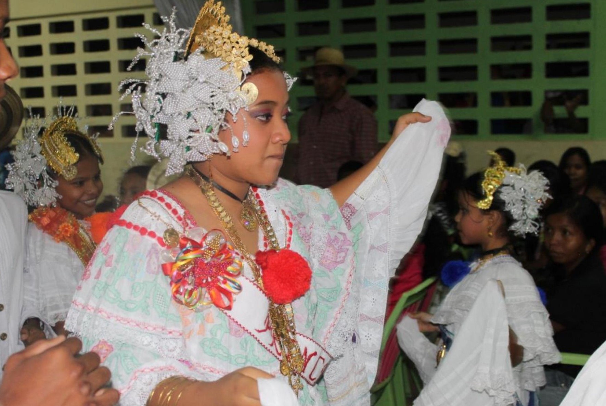

La Pollera panameña, el traje típico que se mantiene a la vanguardia

Las celebraciones en las escuelas se realizan con vestuarios típicos.
Compuesta por un faldón y una camisa llenas de coloridos hilos, adornadas con encajes y en la que artesanas plasman su talento con diferentes técnicas, la pollera es usada en diversas manifestaciones folclóricas, tiene innumerables formas y diseños que se adaptan a cada región del país, y a las piezas musicales típicas que narran una leyenda, además, en diferentes ocasiones ha sido premiada como el traje típico más hermoso del mundo en el certamen de belleza Miss Universo.
Esta expresión de arte pone en manifiesto la fauna y flora del país, confeccionada desde el calor y amor de los hogares de las artesanas que luchan por transferir el legado, adaptándose a la modernidad con el fin de mantener viva la tradición.
Sobre sus orígenes existen una serie de historiadores que nos remonta al Siglo XVI, cuando las mujeres de la región copiaron las modas europeas, adaptándola según nuestras condiciones climáticas, de terreno y cultura.
Según lo que recogen algunas referencias como Wikipedia, la pollera panameña es un vestido semejante al que usaban las españolas en el siglo XVI y fue adoptada por las mujeres campesinas para la faena diaria o asistir a eventos religiosos, no obstante, hoy día, es por excelencia el taje que quieren lucir las mujeres en los festivales, y fiestas folclóricas que durante todo el año se celebran.
El folclorista Alexis Ibarra, contó que según los libros las mujeres panameñas de esa época se inspiraron en el vestido de la moda de las damas europeas que llegaron con el segundo viaje de Cristóbal Colón a América. En ese entonces hubo una copia de ese vestido confeccionando sus propias piezas, e incluso existen referencias de que las mujeres negras compraban su libertad a cambio de una pollera.
Panamá cuenta con 10 provincias, y más de 100 estilos de polleras diferentes, donde resalta la provincia de Los Santos que es una de las que más estilos presenta, y aunque los nombres como Montuna podrían estar presente en diferentes provincias, cada una tiene un distintivo para identificar a qué región pertenece, por ejemplo, la pollera Montuna de Los Santos es la combinación de su camisa con labores trabajadas a mano y un faldón de zaraza, mientras que la Montuna de Herrera se compone de una camisa blanca lisa, aunque en ocasiones podría tener bolitas o florecitas, acompañada de la falda de zaraza.
“La indumentaria de Europa tenía una forma, un estilo, un corte, pero tuvo que adaptarse al clima de Panamá, ya que eran otros tiempos. Un poquito más de calor. La mujer panameña la adquirió, la hizo suya y de esa manera la hizo parte a su vez de su ropa de vestir de estar en casa”, manifestó Ibarra.
Desde el principio, el largo de la pollera fue el mismo, esto debido a las tradiciones de la época en que las mujeres debían cubrir sus piernas, sin embargo, no se utilizaba tanta tela y labores como en la actualidad. Incluso, en una de las primeras fotos de la época republicana se puede ver a las damas utilizar la indumentaria de una forma sencilla, y no eran mostradas como actualmente se hace.
“En una foto con uno de los primeros presidentes de la República, en 1904, y él está con ciertas damas panameña que están ataviada y ellas no están mostrando su indumentaria como un elemento patriótico, están simplemente posando, a diferencia de hoy día que si se toman una foto con una pollera lo primero que hacen es abrirla”, indicó.
Sin embargo, el profesor Eduardo Cano, estudiador de la pollera, profundiza más en la historia para mostrarnos cómo fue cambiando y modificándose su uso, y es que al principio y según su análisis se trataba de las faldas que usaban las mujeres en la época antigua.
Explica que la palabra pollera es un americanismo que encontramos en varios países de América Latina, y el primer registro del término en Panamá fue en 1650, cuando el comediante español Pedro de la Rosa se refiere a las telas que utilizaban las mujeres del país para elaborar sus faldas.
De acuerdo con el profesor, “la pollera era toda falda que utilizaban las mujeres” y los primeros bosquejos de esas indumentarias las dejó Alejandro Malaespina, durante su expedición entre 1789 y 1790.
Cano diferencia la pollera panameña en tres épocas distintas:la pollera colonial, la pollera departamental y la pollera republicana, que presentan diferencias en sus estilos según la época.
La pollera panameña es un vestido que recoge la influencia de las modas de Europa y hasta asiática, y es que los tembleques que son un elemento importante se asemejan a los adornos florales que usaban las mujeres en China, de igual forma en Grecia las mujeres usaban flores con movimiento hechas de perlas y alambres, mientras que en España se usaban flores creadas de escama de pescado, pero hace 2,000 años en China usaban flores llamadas Bajao que tienen movimientos y no se marchitaban, sino hasta varios días después. De hecho, la palabra tembleque se refiere a algo que “tiembla o se mueve”.
Los tembleques son las piezas de perlas y alambres que adornan la cabeza de la mujer.
Aunque hoy, estos trajes en su mayoría son de fondo blanco con labores de hilos a colores, Cano asegura que no todo el tiempo fue así, pues para el Siglo 18 y 19, era imposible encontrar polleras blancas, debido a que no existían técnicas para blanquear las telas, es por ello que las encontrábamos de muchos colores porque era más fácil teñir que blanquear.
Otro elemento importante que destaca en el vestuario es el joyero, que al principio solo se usaba una, dos o tres cadenas, no obstante, hoy día un joyero podría contar con más de 20 cadenas, sumado el tapa hueso, los aretes, anillos, y brazaletes.
“Si observas las fotos antiguas de las mujeres empolleradas a finales del Siglo 19 y mediados del Siglo 20, vas a encontrar a las mujeres con tres cadenas máximo, no con la cantidad de cadenas que vemos hoy día”, expresó.
Cano concluye sus investigaciones que la pollera panameña nace a mediados del Siglo 19, inspiradas en la moda europea, traída por la aristocracia panameña que viajaban a Europa, y tomaron un poco de cada país para elaborarla.
De acuerdo con el investigador, los adornos de la cabeza son los que más variables han sufrido, iniciando con el uso de flores, pasando por las perlas con alambres y la creación de figuras con escamas de pescado.
Pero la pollera también ha sufrido modificaciones, que se detallan mejor en el podcast con el profesor Cano, donde cuenta que algunas de estas modificaciones fueron muy exageradas, pero se retomó la tradición, no obstante, asegura que las modificaciones en la cantidad de telas que se utilizan están ligadas al baile, y es que antes estas ejecuciones artísticas eran muy sumisas, pero con el pasar de los años, los ritmos fueron evolucionando dando origen a la necesidad de aumentar la cantidad de tela para poder ejecutarlos a la perfección.
Pero laslabores de bordados también tuvieron cambios por la necesidad de acelerar el trabajo y hacerlo menos complejo. Cano detalló que para 1920, las hermanas Díaz en una feria en Colón decidieron agrandar el bordado, ya que al principio era solo de 2 pulgadas y eso acrecentaba el grado de dificultad en las diferentes técnicas de bordados o puntos como se le llama en Panamá.
“Hasta mediados del Siglo 20, lo que vamos a ver más común en la pollera es el punto en cruz que es el más antiguo, después veremos el talco en sombra, para 1930 se empieza a usar el punto atrás o punto de cadeneta, en 1940 se empezó a usar el punto pata de gallina y recientemente apareció el zurcido”, recordó.
Según Ibarra, no fue hasta 1912, con la celebración del Carnaval y el reinado de Ramona Emilia Lefevre de la Ossa, conocida como “Trona”, que la pollera empieza a tener otros significados, estilos y usos. Es allí cuando se empieza a incrementar la cantidad de tela, las labores, y se aumenta la cantidad de joyas que utilizaba la mujer.
Confección de la pollera
Así como hermosa, la confección de una pollera panameña es compleja, el traje está compuesto del pollerón que lleva labores sobre el cuerpo y el susto que están divididos por las trencillas que muchas veces se hacen a mano, la camisa compuesta por varias arandelas laboreadas, adornadas con encajes que también podrían ser hechos a mano o comerciales, y el mundillo enjaretado.
Otra pieza importante en el vestuario es la enagua o peticote que es menos ancho que la pollera y aunque la mayoría del tiempo está oculto, es adornado con finas trencillas de hilo de algodón o tejidas en gancho. La delicadeza de sus tejidos también es parte de la elegancia que acompaña la pieza.
Blanca Villareal, artesana con más de dos décadas de experiencia, dijo hacer una pollera zurcida toma al menos dos años, aunque asegura que ahora es más fácil elaborarlas, porque antes las labores eran manuales y ahora han surgido herramientas que facilitan el trabajo como el mundillero.
Hilos, telas, moldes de puntos, lupas, tambores, agujas y una artesana exclusivamente para el mundillo son parte de los materiales que se necesitan para su creación.
“Este es un trabajo arduo, esta es una obra de arte y tenemos que hacerlo con mucha delicadeza”, expresó Villareal.
Comentó que la confección del vestuario ha evolucionado mucho, con el pasar de los años se han implementado técnicas nuevas que ha tenido que aprender para mantenerse a la vanguardia.
Unas de las técnicas que ha cambiado es el marcado, que antes se hacía al ‘ojo’ de forma manual, sin embargo, hoy día se utiliza el angeo para marcar el dibujo que facilita la elaboración.
Recordó que en el pasado una sola persona era la encargada de hacer toda la pollera, mientras que actualmente son cerca de cinco artesanas que se involucran en el trabajo y así se puede entregar en menor tiempo.
También destacó que las labores eran más pequeñas, no obstante, hay quienes les gusta que tengan mayor tamaño y como artesanas se ajustan a lo que solicita la persona.
Para la elaboración de una pollera panameña se utilizan mínimo 8 yardas de tela, pero esto depende del tamaño de la persona, y es que Villareal explica que si quien va a lucir el vestido mide unos 42 de alto de la pollera, se debe utilizar mínimo 10 yardas, aunque reconoce que estas medidas se están aumentando con el fin de que tengan mayor vuelo.
Explicó que, para la técnica sombreada en degradado, los hilos ya vienen fabricados con las diferentes tonalidades, aunque ha visto que hay quienes lo cortan en la parte más blanca.
El costo de la pollera va desde los B/. 1,000 hasta B/. 20,000, sin contar con el arreglo de la cabeza y el joyero, mientras que alquilarla podría alcanzar los B/. 500.00 sin accesorio, todo depende de lo que requiera la persona.
En la ciudad de Las Tablas, provincia de Los Santos, cada año se celebra el Día de la Pollera el 22 de julio, dentro de la celebración del Festival Nacional de la Pollera, sin embargo, esta fecha podría ser elevada a Día Nacional de la Pollera, con el proyecto de Ley 606 aprobado en tercer debate en la Asamblea Nacional.
Además, desde el 2004 mediante el Decreto Ejecutivo No. 8 de 3 de febrero, se creó el Desfile de las Mil Polleras, una celebración en honor al traje típico que se realiza en los primeros 15 días del mes de enero en Las Tablas, donde miles de mujeres bien ataviadas lucen sus hermosas polleras por las calles de este distrito que guarda con recelo la cultura y tradición panameña.